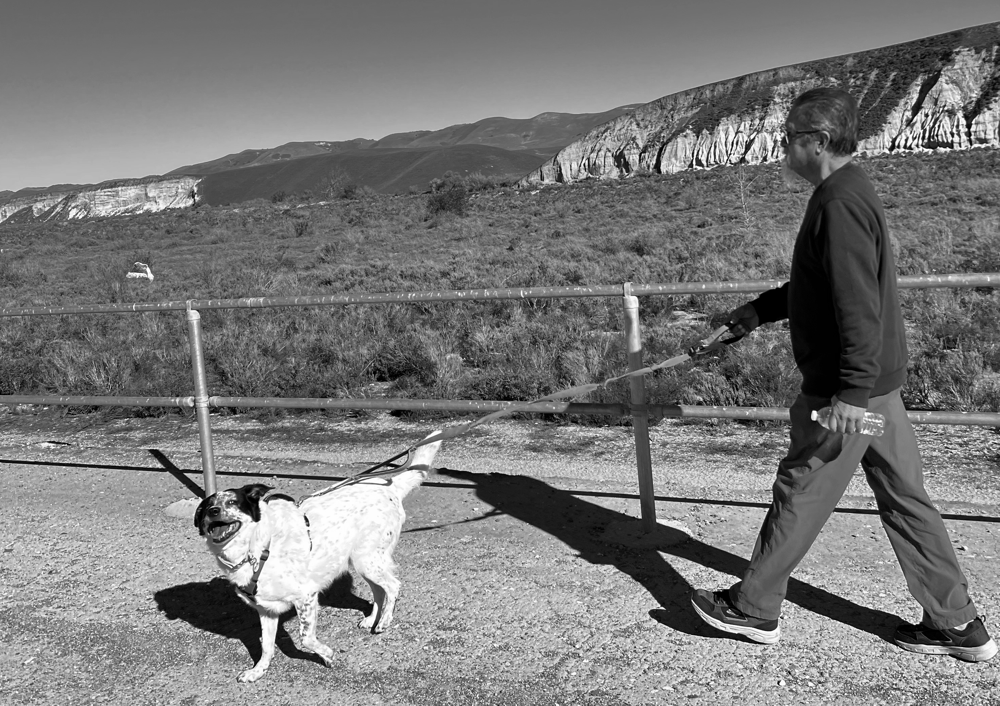

<!-- ABOUT ME SECTION -->
  <section id="about" class="py-16 sm:py-20 px-5 sm:px-8 max-w-5xl mx-auto">
    <div class="bg-white border border-coastal-hairline rounded-2xl overflow-hidden shadow-sm">
      <!-- Equal-Value Pastel Sky Blue & Peach Double-Rule Accent -->
      <div class="h-1.5 bg-coastal-blue/70"></div>
      <div class="h-1 bg-coastal-peach/65"></div>

      <div class="p-7 sm:p-12 space-y-8">
        <!-- Top Header: Portrait + Heading + Fear Free Logo -->
        <div class="flex flex-col md:flex-row items-center justify-between gap-6 sm:gap-8 pb-8 border-b border-coastal-hairline">
          <div class="flex flex-col sm:flex-row items-center gap-6 text-center sm:text-left">
            <div class="p-2 bg-coastal-blueSoft/75 border border-coastal-blueLine rounded-2xl shrink-0">
              
            </div>

            <div class="space-y-1">
              <span class="text-xs font-bold uppercase tracking-[0.2em] text-coastal-peach block">
                About Your Trainer
              </span>
              <h2 class="text-3xl sm:text-5xl font-serif font-extrabold text-coastal-heading leading-tight">
                Hi, I’m Kris!
              </h2>
            </div>
          </div>

          <rect x=%226%22 y=%226%22 width=%22408%22 height=%22238%22 rx=%2238%22 fill=%22%2313436b%22 stroke=%22%2313436b%22 stroke-width=%2212%22/><path d=%22M18 165 H402 V206 A26 26 0 0 1 376 232 H44 A26 26 0 0 1 18 206 Z%22 fill=%22%2353a8dc%22/><rect x=%2214%22 y=%2214%22 width=%22392%22 height=%22222%22 rx=%2230%22 fill=%22none%22 stroke=%22%23ffffff%22 stroke-width=%225%22/><text x=%22205%22 y=%2292%22 text-anchor=%22middle%22 fill=%22%23ffffff%22 font-family=%22Outfit, sans-serif%22 font-size=%2264%22 font-weight=%22700%22>FearFree</text><text x=%22350%22 y=%2252%22 fill=%22%23ffffff%22 font-family=%22sans-serif%22 font-size=%2216%22>®</text><circle cx=%2295%22 cy=%22132%22 r=%2220%22 fill=%22none%22 stroke=%22%23ffffff%22 stroke-width=%224%22/><path d=%22M84 132 l8 8 l22 -22%22 fill=%22none%22 stroke=%22%2353a8dc%22 stroke-width=%227%22 stroke-linecap=%22round%22 stroke-linejoin=%22round%22/><text x=%22238%22 y=%22146%22 text-anchor=%22middle%22 fill=%22%2353a8dc%22 font-family=%22Plus Jakarta Sans, sans-serif%22 font-size=%2240%22 font-weight=%22800%22 letter-spacing=%222%22>CERTIFIED</text><text x=%22210%22 y=%22211%22 text-anchor=%22middle%22 fill=%22%23ffffff%22 font-family=%22Plus Jakarta Sans, sans-serif%22 font-size=%2235%22 font-weight=%22800%22 letter-spacing=%221.5%22>PROFESSIONAL</text></svg>';"
          />
        </div>

        <!-- Bio Paragraphs -->
        <div class="space-y-6 text-coastal-body text-base sm:text-lg leading-relaxed text-left">
          <p>
            Before creating Coastline Canine Training, I spent nearly two years working professionally as a dog trainer leading both group classes and private sessions, and previously worked as a Dog Care Specialist at the former Santa Maria Valley Humane Society (now Santa Barbara Humane). As a Fear Free Certified Professional studying for my CCPDT-KA certification in March of 2027, I specialize in gentle, Fear Free training, especially for dogs dealing with high fear, anxiety, and stress (FAS).
          </p>

          <!-- Middle Paragraph + Dad & Jackie Photo -->
          <div class="flex flex-col md:flex-row items-center gap-6 sm:gap-8 py-2">
            <div class="p-2 bg-coastal-peachSoft/60 border border-coastal-peachLine rounded-2xl shrink-0">
              
            </div>

            <p>
              My love for training started at home with Jack, my late dad’s 10 year old Aussie Heeler. Using positive reinforcement with him, we were able to turn years of heavy leash pulling into relaxed walks and reinforce his recall to over 100 feet! As long as he got a tasty bit of cheese or a small piece of beef, he was excited and happy to come running. Since then, I’ve seen the most incredible changes in behavior. I have watched dogs who needed to be carried from a truck because they were too scared to walk blossom into walking with full ease. I have also guided pet parents who recently adopted a nervous dog to build up his confidence, allowing him to hold the most beautiful down stay in the busiest of places and become a social butterfly.
            </p>
          </div>

          <p>
            I know how much it means to want to help your dog be the best good boy or girl they can be, and I am here to offer gentle guidance that will build a stronger, lifelong bond between you and your puppy son or daughter.
          </p>
        </div>

        <!-- Full-Width 100% Fear Free Guarantee Callout Band (Analogous Pastel Mint) -->
        <div class="bg-coastal-mint/75 border border-coastal-mintLine border-l-4 border-l-coastal-mintMuted rounded-xl p-6 space-y-1.5 text-left">
          <h3 class="font-serif font-bold text-coastal-heading text-xl">100% Fear Free Guarantee</h3>
          <p class="text-base text-coastal-body leading-relaxed">
            No shock collars, prong collars, e-collars, or intimidation. Just positive reinforcement, clear communication, and gentle leads paired with proper desensitization so your dog always feels safe and confident.
          </p>
        </div>
      </div>
    </div>
  </section>
